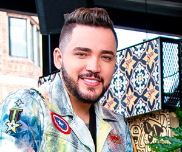
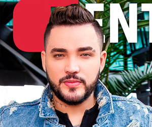

Jessi Uribe
Agradecemos a:
LOCACIÓN:
Agradecemos a:
Instagram: @federalrooftop
Facebook: Federal Rooftop
Reservas: 311 593 39 99
Av. Calle 82 #12 - 25
federalbogota@gmail.com
MAQUILLAJE:
Catalina Bernal Corredor
Instagram:@makeupkatabernal
Tel: 3176359278
La voz revelación del género popular nos cuenta como sus sueños se han hecho realidad.
 @jessiuribe3
@jessiuribe3 Jessi Uribe
Jessi Uribe Jessi Uribe
Jessi UribeJessi siempre supo que su camino era la música, desde muy pequeño su padre le presentó este arte con rancheras de Juan Gabriel, Vicente Fernández, Marco Antonio Solís y Joan Sebastian, quien se convirtió en su referente. Su admiración por ¨El Rey del Jaripeo¨ aportó en el estilo que hoy escuchamos en la voz de este artista que siempre soñó con una carrera musical exitosa.
El apoyo para lograr sus sueños ha venido principalmente de su familia, así que este santandereano buscó la manera de presentar su talento en programas concurso como -American Idol Latinoamerica- donde logró quedar entre los 50 mejores, en -La Voz Colombia- ocupó el cuarto puesto; esto lo motivo a seguir intentando hasta llegar al programa -A otro nivel en el 2017- donde fnalizó en segundo lugar. A pesar de no ganar, si logró conquistar el corazón de muchos fanáticos que reconocieron en él un artista de mucha proyección.

{kind=link}
{kind=link}
Quisimos saber qué cree él sobre los ganadores de los programas que no tienen la explosión mediática como otros participantes, y nos aclaró que algunos triunfadores, muchas veces, no se preparan para el éxito que pueden tener. Además nos confesó que al finalizar La Voz Colombia no pasó nada, pues no contaba con un equipo de trabajo, ni el material musical. Diferente fue en A otro nivel porque ya estaba preparado con temas como -Repítela-,-Matemos Las Ganas- y -Dulce Pecado- canciones ya con producción audiovisual que catapultaron su carrera.
El componer, lo hace muy feliz, pues este don que Dios le dio le ha permitido escuchar sus creaciones, basadas en historias reales, en voces como las de Francy, Christian Nodal, Grupo Dominio, Pipe Bueno entre otros.
Su carrera ha despegado con tanto éxito, que el mismo Jessi Uribe puede decir que ha cumplido uno de sus sueños sin esperarlo pero si anhelándolo, pues pasó por muchas situaciones difíciles antes de llegar a donde se encuentra hoy.
|  |  |
{kind=link}
{kind=link}
{kind=link}
{kind=link}
Colaboraciones musicales no han faltado, canciones como -Ellas Así Son- junto a Espinoza Paz y -Como Si Nada- con Paola Jara, se han convertido en éxitos rotundos.
Lo que viene ahora es consolidarse a nivel internacional y posicionar su música en diferentes países como México y Estados Unidos donde ya estuvo haciendo sus primeras presentaciones.
En cuanto a nuevos lanzamientos, la sorpresa es grande pues tendremos la continuación de -Dulce pecado- un tema junto a Jhonny Rivera titulado -Tu Veneno-.
Creías saber todo de Jessi, aquí te dejamos algunos datos que tal vez no conocías.
Tiene dos hermanos. Su trago preferido es la cerveza, pero últimamente prefere el whisky. Le encanta el mango. Casi nunca desayuna pues se levanta muy tarde. El negro es su color favorito. Quiere conocer Dubái. En sus tiempos libres disfruta jugando Xbox. Es un poco malgeniado. Se considera muy tierno. Le molesta y le entristecen los chismes. Lo que no puede faltar en su vida es su familia. El regalo que más le hacen sus fans son vasos.